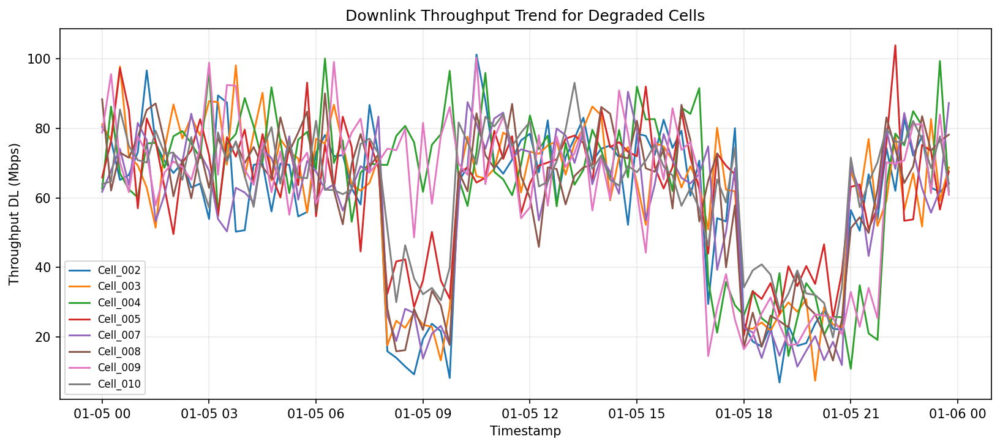
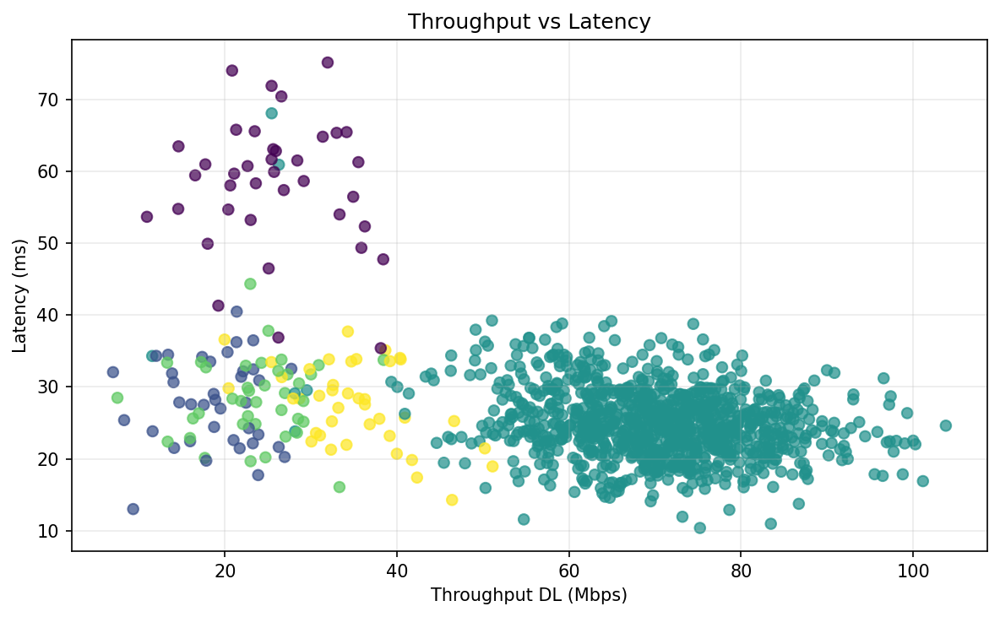
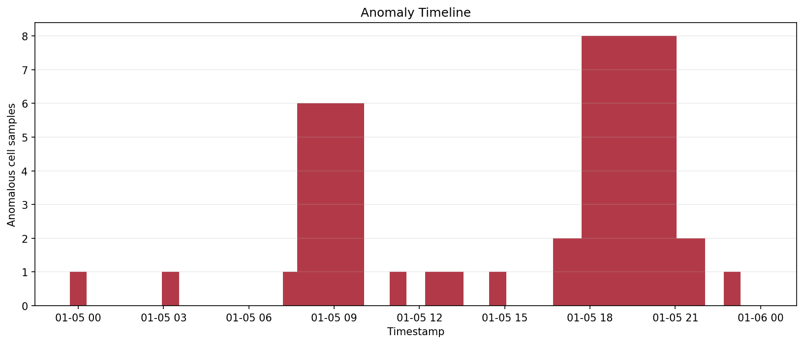
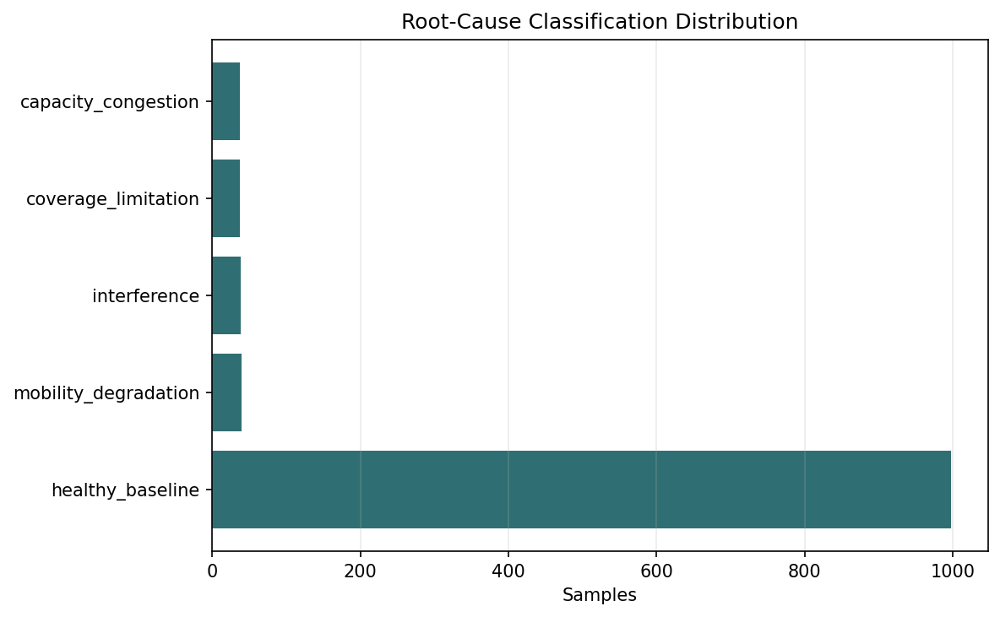
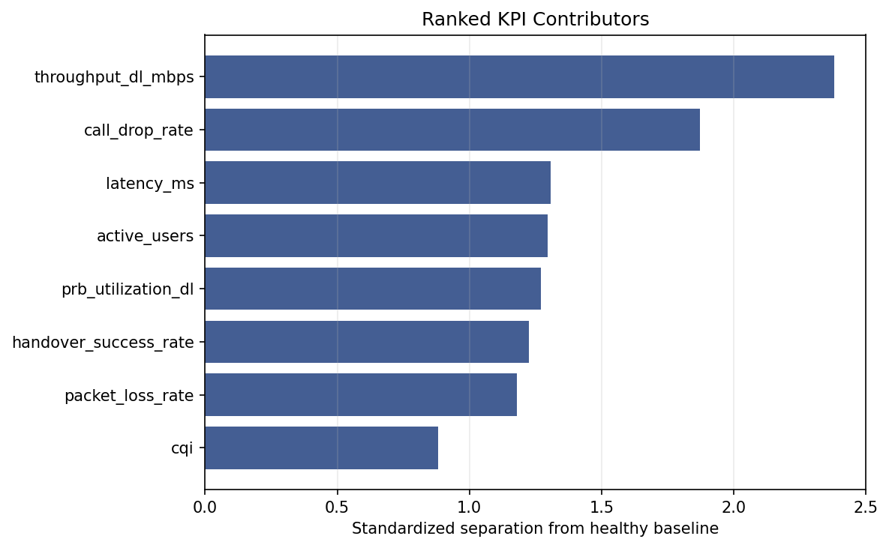

Cell_002 with dominant root cause
healthy_baseline.
| cell_id | rsrp_dbm | sinr_db | prb_utilization_dl | throughput_dl_mbps | latency_ms | degraded_ratio |
|---|---|---|---|---|---|---|
| Cell_002 | -96.164 | 15.089 | 51.263 | 58.941 | 25.458 | 0.208 |
| Cell_005 | -92.454 | 15.107 | 51.099 | 62.948 | 25.545 | 0.208 |
| Cell_009 | -92.669 | 14.754 | 57.013 | 62.404 | 30.727 | 0.208 |
| Cell_010 | -92.182 | 14.657 | 52.204 | 63.376 | 25.873 | 0.208 |
| Cell_004 | -92.055 | 14.997 | 57.913 | 64.552 | 31.579 | 0.188 |
| Cell_007 | -95.819 | 14.749 | 52.570 | 58.108 | 25.405 | 0.188 |
| Cell_008 | -91.819 | 12.223 | 52.162 | 60.632 | 25.551 | 0.188 |
| Cell_003 | -92.158 | 12.419 | 52.654 | 61.449 | 25.028 | 0.177 |
| Cell_001 | -92.168 | 14.789 | 49.822 | 68.480 | 25.484 | 0.000 |
| Cell_006 | -92.084 | 15.168 | 50.907 | 70.732 | 24.872 | 0.000 |
| Cell_011 | -91.764 | 14.729 | 52.881 | 68.894 | 25.225 | 0.000 |
| Cell_012 | -91.689 | 15.227 | 49.365 | 70.108 | 25.401 | 0.000 |
| cell_id | dominant_root_cause | samples | degraded_samples | dominant_share |
|---|---|---|---|---|
| Cell_002 | healthy_baseline | 96 | 20 | 0.792 |
| Cell_003 | healthy_baseline | 96 | 20 | 0.792 |
| Cell_005 | healthy_baseline | 96 | 20 | 0.792 |
| Cell_009 | healthy_baseline | 96 | 20 | 0.792 |
| Cell_010 | healthy_baseline | 96 | 20 | 0.792 |
| Cell_008 | healthy_baseline | 96 | 19 | 0.802 |
| Cell_004 | healthy_baseline | 96 | 18 | 0.812 |
| Cell_007 | healthy_baseline | 96 | 18 | 0.812 |
| Cell_001 | healthy_baseline | 96 | 0 | 1.000 |
| Cell_006 | healthy_baseline | 96 | 0 | 1.000 |
| Cell_011 | healthy_baseline | 96 | 0 | 1.000 |
| Cell_012 | healthy_baseline | 96 | 0 | 1.000 |
| kpi | importance | direction |
|---|---|---|
| throughput_dl_mbps | 2.381 | lower |
| call_drop_rate | 1.873 | higher |
| latency_ms | 1.306 | higher |
| active_users | 1.295 | higher |
| prb_utilization_dl | 1.270 | higher |
| handover_success_rate | 1.226 | lower |
| packet_loss_rate | 1.179 | higher |
| cqi | 0.881 | lower |
| sinr_db | 0.871 | lower |
| rsrp_dbm | 0.791 | lower |





The logic separates weak coverage, interference, high-load congestion, and mobility failures using transparent thresholds before ranking the KPIs that most separate degraded behavior from the healthy baseline. This keeps the workflow explainable and reproducible.
This report uses synthetic KPI data. Real operator data is confidential, and field validation would require vendor-specific counters, topology context, configuration history, and drive-test or trace evidence.